Roadside SriLanka part2/ロードサイド☆スリランカ その2
大仏巡りも一息ついて中型大仏巡りのハナシでもしたいんですけど、いいですか？
これまでも散々述べたようにスリランカには数メートル級の中型大仏（日本語変か？）が佃煮に出来るほどいる。
数十メートル級の大仏にはない親しみやすさが特徴のストリート系の中型大仏。
南部の街、ゴールで迎えた初日の出。
神々しいご来光を眺めていると、その右側に白いカタマリが。
むむむ。大仏じゃん。
石を投げれば大仏に当る御土地柄のスリランカだが、まさか初日の出にまで大仏さんがフューチャーされるとは…
あまりにも粋な展開に感動。
今年も大仏まみれの1年になりそうですね（って毎年の事ですけど）。
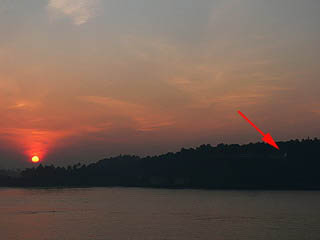 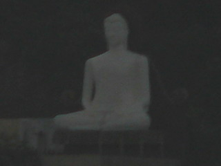
一方こちらはゴールからマータラに向かう途中で見かけた大仏さん。
大仏さんだけに限らずスリランカの仏像、特に仏陀像は顔が男っぽい。
ついでに言うと髪形もパンチきつい感じで男気ムンムンな印象が強い。
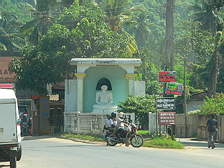 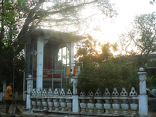
南部から再び首都コロンボに向かう道中、カルタラの街を通過した。
カルタラといえばGangatilakaViharaの巨大なストゥーパ（ダーガバってゆーんですか）がそびえている。
車を運転している人たちも参拝したり賽銭をあげたりしているのでお寺の近くは渋滞気味。
かくいう我がドライバーも車を下りてお参りしてました。
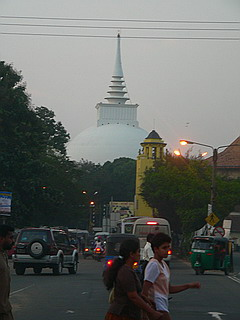 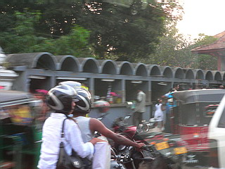
近くには花を売る店がずらっと並んでいた。
ロードサイド仏陀に目が行きがちだが、主要道の交差点やロータリーにはスーツ姿の銅像もある。
左はカルタラの橋の袂に立っていた銅像。参拝帰りの人たちを見下ろしている。誰？
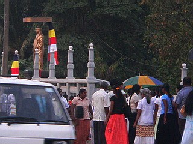 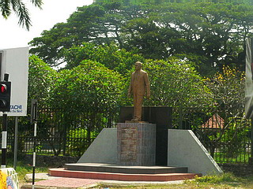
右はコロンボ郊外。仏像だからいいものの、特定の人の銅像って何かヤですね。
「オラが村のセンセイは新幹線と高速道路を持って来たずら」みたいな。
コロンボから内陸部の古都キャンディに向かう途中見かけたトラックの荷台で展開されていたお茶の間。
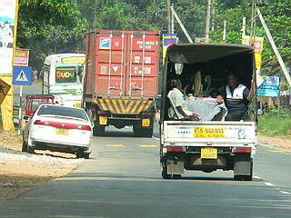
ガタガタ道になるとみんなでテーブルの上のティーカップを押さえたり、結構大変そうでした…
この体勢でどこまで行くんだろう？パイプ椅子だし。
同じくキャンディへの道中。
スリランカでは建設中の建物に案山子のような人形を設置する風習があるようだ。
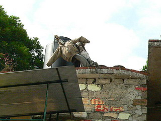 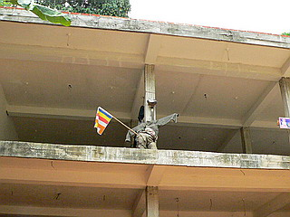
中には顔だけのものもある。
古今東西、人形とは「ヒトの代わり」という意味合いがあるが、ここの場合は何なんだろう？
家を新築することで起こる災難を転化させるのだろう…えっ、人柱って事？
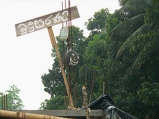
ちなみにキャンディから北に行くと象よけの案山子人形があるそうだが、残念ながら遭遇出来なかった。
キャンディへ向かう山中で出会った大仏さん。
見れば全身をオレンジ色の布で覆われている。
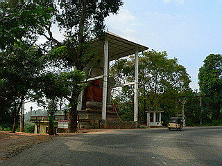 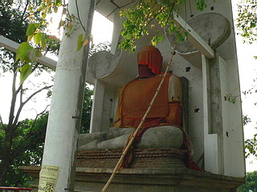
何でも修復中の仏像はこうして布をかけておくらしい。
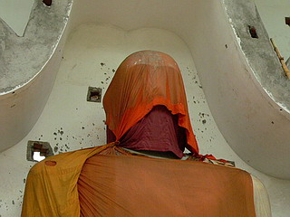
修復中というよりも、もっと深遠なメッセージが込められているようにも見えた。
神は死んだ、とか。
民家の入口に掲げられていたゲート。
椰子の葉で作られたものだ。アーチに架かる葉で作られた模様が印象的だった。
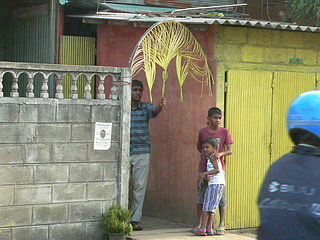
このゲート、埋葬当日の墓地にも飾られていたので葬儀と関係するものなのかもしれない。
詳しいことはわかんないす。
渋滞するキャンディ市内でひときわ異彩を放っていた大仏さん。
足場を架けていくつもの布をかけていた。
一枚でバーン！といかずに何枚もミチミチ架けているところが凄くチャーミングでした。
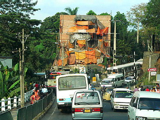 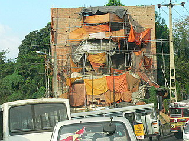
遠目に見たら現代美術の作品かと思っちゃいました…
キャンディの中心部を見下ろす山腹にあった小（？）大仏。
コブラが仏サマの傘になって修行のお手伝いをしている、の図。
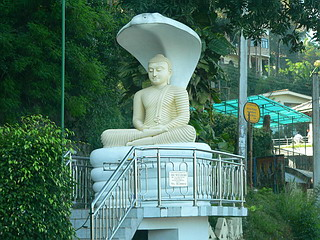
で、キャンディ郊外。
こんな感じで次から次へとロードサイド仏が出現する。
最早、道端に仏像がないと物足りないカラダになってしまいました…
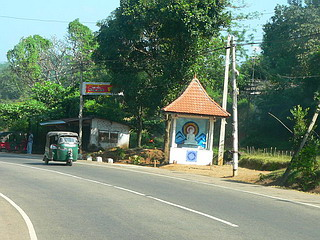
こちらは小さなお寺だったのだろう。
橋のたもとの目立つ場所だけにロードサインとしてはかなり効果的だと思う。
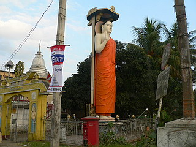
こんな塩梅でスリランカには路傍の大仏さんがいっぱいいる。
それは仏教世界の最前線で叫んでいる、無言なれど豊穣なるメッセージと考えていただきたい。
俺は仏教徒だぜ！仏教最高！ここは仏教の地だぜ！
…といった類の単純なメッセージだが、キリスト教、ヒンズー教、イスラム教がシノギを削るこの地において、このメッセージの意味合いは決して小さくない筈である。
キャンディの市街地を見下ろすように、山の上に大仏がある。
仏都キャンディにおいてこの大仏の存在は格別の意味があろう。
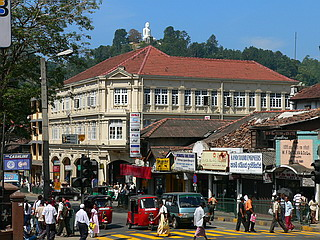 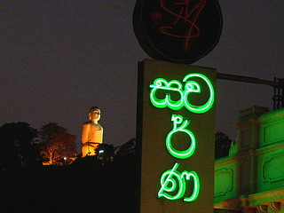
夜はライトアップ。
８時を過ぎると店がバタバタ閉まるので余計目立ってました。